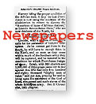

|

In 1860 approximately 20 percent of Augusta County residents were of African descent, nearly all of which were slaves. After a great portion of the white male workforce was away fighting the war, the economy was forced to be increasingly dependent on slave labor. The institution of slavery, however, broke down as the war progressed.
The Staunton Spectator was the only local newspaper in operation during the war's beginning, but slavery was never more than a detail in the many articles about the South's right of secession. Slavery became a hot topic in the media only after the Emancipation Proclamation on January 1, 1863. Subsequent to emancipation was the formation of the U.S. Colored Troops, which initially consisted of 150,000 negroes, many of whom were former slaves. Articles in early 1863 were vehemently anti-Lincoln regarding these developments, and the popular opinion was that Negroes were an inferior race. As the war progressed, some articles asserted that life as a slave was better than life as a member of the Federal army.
Following Gettysburg (July 4, 1863), the number of ads in the Staunton newspapers about runaways noticeably increased, according to war historian Nancy Sorrells. Many Augusta slaves were already absent, however, having been impressed (as property) for labor at and around Richmond.
African-Americans received Emancipation from the Union forces, but not a much-improved station in life. Gen. Ulysses S. Grant's order to "leave the Valley a barren waste" regarded slaves as property as well, refering to them more as agricultural machinery than as humans or citizens. Also, there were frequent reports of companies of U.S. Colored Troops used on the front lines as expendable soldiers.
There were very vew documents pertaining to African-Americans, and most are from the Staunton newspapers.




 Return to Main Menu
Return to Main Menu